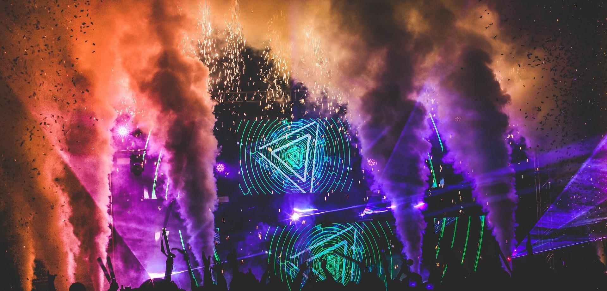

If there ever has been a faith that has united the whole of humanity, regardless of caste, creed, religion, nationality, race or color, it was and is music.
Help & FAQ
Tips & Tricks
Distortion Copenhagen, 3-7 June 2020
It began in 1998 as a modest one-day musical event, but now it takes over entire areas of Copenhagen while thousands of people enjoy a real moving holiday in the streets of the Danish capital.Distortion is a multi-genre, city wide music festival/party in Copenhagen that lasts for 5 days. Consisting of three parts, Distortion Club, Distortion Ø and Street Parties, the festival is spread throughout the Danish capital, taking many shapes and forms. It is one of the largest annual gatherings in Europe.
